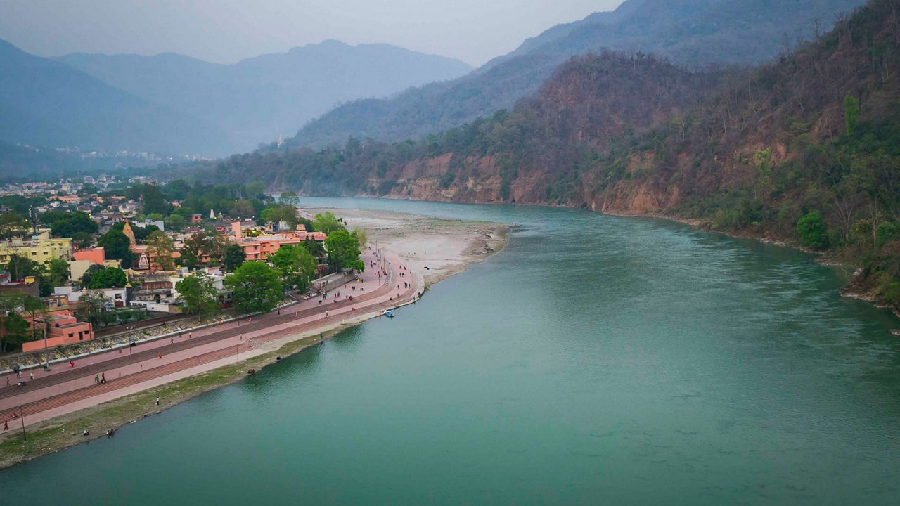
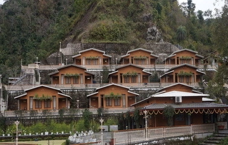
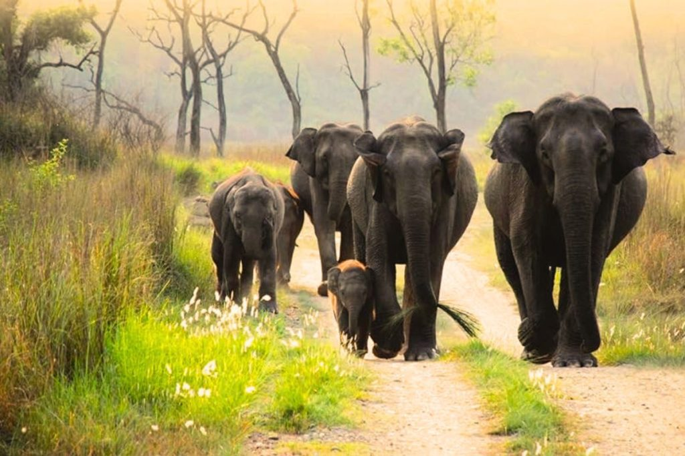
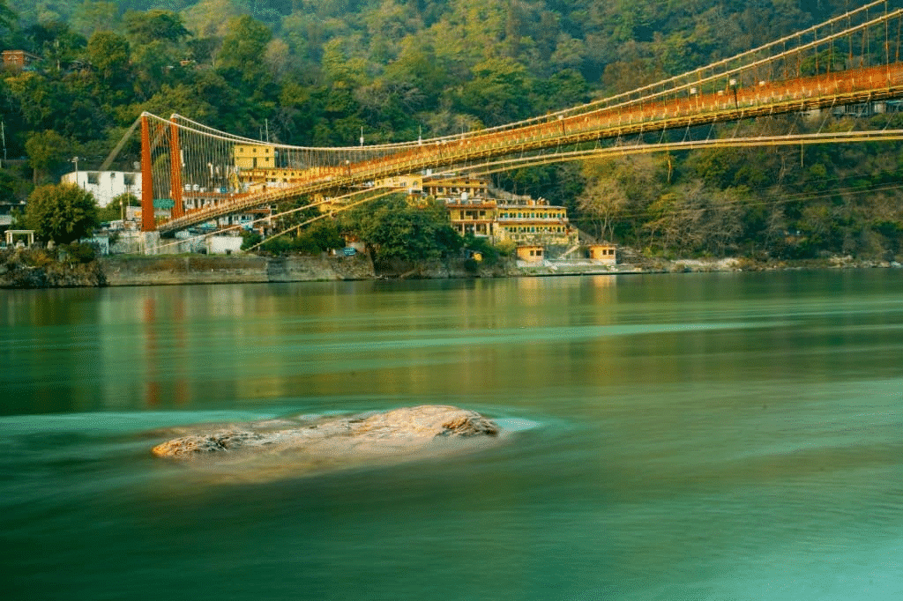

Welcome to Rishikesh
Rishikesh, situated on the banks of the holy Ganges River in Uttarakhand, India, is a blend of spirituality, nature, and adventure. Known as the "Yoga Capital of the World" and "Gateway to the Himalayas," Rishikesh is a destination that attracts travelers from all corners of the globe. Whether you're seeking tranquility, adventure, or a spiritual awakening, Rishikesh has something for everyone.
1. The Ganges and Triveni Ghat
Triveni Ghat, Rishikesh
The Ganges River is the lifeblood of Rishikesh, and the Triveni Ghat is the most famous spot for witnessing its beauty. People come here to take part in the evening Ganga Aarti, a mesmerizing ritual of chanting and lamp offerings to the river.
Key Highlights:
- Ganga Aarti: The evening ritual attracts hundreds of devotees and tourists alike, who gather to watch the spectacular prayer ceremony.
- Spiritual Significance: A visit to the Ganges is considered spiritually cleansing, and many come here to take a dip in its holy waters.
- Photography: The serene waters, illuminated temples, and the vibrant aarti make it a photographer's paradise.
Best Time to Visit:
The best time to visit Rishikesh is during the winter months (October to March), when the weather is cool and pleasant for outdoor activities and sightseeing.
2. Yoga and Meditation Retreats
Yoga Retreat in Rishikesh
Rishikesh is globally recognized as the "Yoga Capital of the World." Whether you're an experienced yogi or a beginner, you'll find various ashrams and retreats offering classes, workshops, and immersive experiences in yoga, meditation, and spiritual learning.
Key Highlights:
- International Yoga Festival: Every year, Rishikesh hosts an International Yoga Festival, attracting yoga practitioners from around the world.
- Meditation and Wellness: Join peaceful meditation sessions or wellness programs in the tranquil ashrams by the Ganges River.
- Yoga Teacher Training: Take a certified course in Yoga Teacher Training (YTT) at one of the renowned yoga schools in Rishikesh.
Adventure Tip:
Try a combination of yoga and rafting! Many retreats in Rishikesh offer packages that combine spiritual practice with adrenaline-pumping white-water rafting in the Ganges.
3. White-Water Rafting and Adventure Activities

White Water Rafting in Rishikesh
For adventure lovers, Rishikesh offers one of the best white-water rafting experiences in India. The river, with its challenging rapids, provides an exhilarating experience for both beginners and seasoned rafters.
Key Highlights:
- White-Water Rafting: Raft through the mighty Ganges, experiencing an adrenaline rush as you navigate through various rapids.
- Camping: Enjoy riverside camping along the Ganges while participating in bonfire sessions and adventure activities.
- Trekking: Trek to nearby spots like the Neer Garh Waterfall for a refreshing dip or visit the famous Kunjapuri Temple for a panoramic view of the Himalayas.
Adventure Tip:
The best months for rafting are between September and June when the river flow is safe for rafting.
4. Rajaji National Park
Rajaji National Park
Rajaji National Park, located just a short distance from Rishikesh, is a must-visit for wildlife enthusiasts. The park is home to elephants, tigers, leopards, and various species of birds.
Key Highlights:
- Wildlife Safari: Enjoy a jeep safari in Rajaji National Park and spot majestic animals in their natural habitat.
- Birdwatching: The park is home to over 400 species of birds, making it a paradise for birdwatchers.
- Scenic Beauty: The park is set amidst the foothills of the Himalayas, offering picturesque views of nature.
Best Time to Visit:
The best time to visit Rajaji National Park is during the winter months (November to March) when the weather is ideal for wildlife safaris.
5. Laxman Jhula and Ram Jhula
Laxman Jhula
Laxman Jhula and Ram Jhula are iconic suspension bridges in Rishikesh, known for their spiritual significance and beautiful views of the Ganges River. Walking across these bridges provides an amazing experience and connects visitors with the region's rich spiritual heritage.
Key Highlights:
- Mythological Importance: Laxman Jhula is believed to be the spot where Lord Rama's brother, Lakshman, crossed the river on a jute rope.
- Temple Visits: Visit the nearby temples like the Laxman Jhula Temple and the Gita Bhavan for spiritual solace.
- Scenic Views: The bridges offer a panoramic view of Rishikesh and the Ganges, perfect for photography.
Conclusion
Rishikesh offers a unique blend of spirituality, adventure, and tranquility. Whether you are looking to find inner peace through yoga and meditation or seeking adrenaline through rafting and trekking, Rishikesh caters to all kinds of travelers. Embark on a spiritual journey or indulge in thrilling adventures — Rishikesh promises an unforgettable experience.